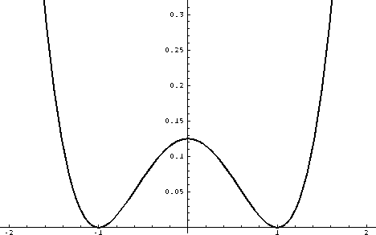
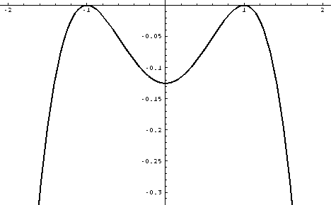
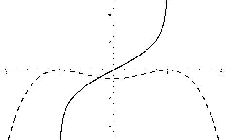
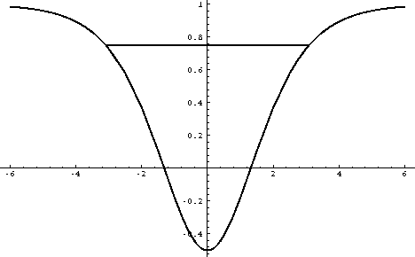
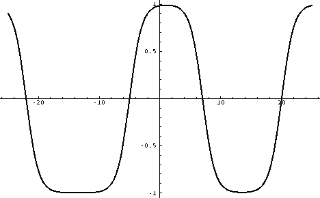

Tunneling in Quantum Mechanics
A nice example for the role of instantons is the double
well potential.

This potential has two degenerate minima, so classically
there are two possible vacua. Quantum mechanically, the
two states mix and the groundstate is (approximately)
given by the symmetric combination of the two states,
while the first excited state is the antisymmetric
combination. If the potential barrier is large, tunneling
is suppressed and the splitting between the first two
states is exponentially small.
Instantons are classical solutions, while the most important
phenomenon here is a quantum effect, tunneling. How can they possibly
be important here?
There is a formal way to answer this question and a more intuitive
one, which I give here. In the classically allowed region, the
wavefunction is oscillatory, while in the clasically forbidden
region, it is exponentially damped. In terms of the wave function
psi(x)=Exp(ipx), this corresponds to going from real to imaginary
momenta p. A way to introduce imaginary momenta is to change from
real time t to imaginary time tau=it. This transformation changes
the classical energy E=mv^2/2+V(x) to -E=mv^2/2-V(x).

In this potential, tunneling is a classically allowed process. The
instanton solution is the classical solution that starts at one
local minimum (now a maximum) at (imaginary) time tau=-infinity
and ends at the other minimum at tau=+infinity.

The solution is called an instanton, because it is localized in
imaginary time. Tunneling happens ``instantaneously'' in real time.
In quantum mechanics the relative weight of different paths is
controlled by the phase factor exp(iS/h). In imaginary time
(euclidean) quantum mechanics, the weight factor becomes
exp(-S_E). In the present case, the euclidean action S_E is
easily calculated. We find blub blub

more blub blub
